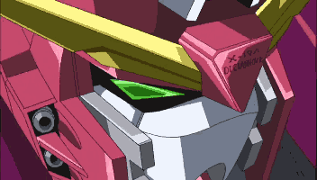

Technical Specifications
The Infinite Justice was developed secretly by the Clyne Faction based off its predecessor, the ZGMF-X09A Justice. The Justice was piloted to Earth by Lacus Clyne and was given to Athrun Zala at the Second Battle of ORB. Although it is similar to its early model, there are several new weapons.
The Infinite Justice also is equipped with a Fatum-01 Lifter. This allows it to maneuver through the atmosphere easier. It is also equipped with several more weapons that are similar to the ones mounted on the suit.
Characteristics
- Height: 18.9 meters
- Weight: 79.67 tons
- Pilot: Athrun Zala
- Power Supply: Nuclear Reactor
Armaments
- Fatum-01 subflight lifter
- MA-M02G beam saber
- MMI-GAU26 chest mounted CIWS
- MMI-M19L 14mm dual machine gun
- MR-Q15A beam blade
This is where the form is going to be.